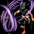
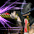

2020/02/19～ 武道家 スキル一覧
2020/02/19 状態異常に伴うスキル改変後のデータ。
[覚醒スキル]
| 正拳突き | ||||||||||||||
|---|---|---|---|---|---|---|---|---|---|---|---|---|---|---|
| スキル難易度 | 1 | |||||||||||||
| 必要スキル | なし |
|||||||||||||
| スキル説明 | 左手の拳で攻撃。各種拳技術の基本になるスキルで、突き直後、右手で直接攻撃する他のスキルのスキルレベルがしばらく上昇する。 | |||||||||||||
| レベル | 1 | 2 | 3 | 4 | 5 | 6 | 7 | 8 | 9 | 10 | 20 | 30 | 40 | 50 |
| 消費CP | 0 | 0 | 0 | 0 | 0 | 0 | 0 | 0 | 0 | 0 | 0 | 0 | 0 | 0 |
| 獲得ＣＰ | 3.5 | 4 | 4.5 | 5 | 5.5 | 6 | 6.5 | 7 | 7.5 | 8 | 13 | 18 | 23 | 28 |
| 物理ダメージ(％) | 2% | 4% | 6% | 8% | 10% | 12% | 14% | 16% | 18% | 20% | 40% | 60% | 80% | 100% |
| 攻撃速度 | 0.80% | 1.60% | 2.40% | 3.20% | 4% | 4.80% | 5.60% | 6.40% | 7.20% | 8% | 16% | 24% | 32% | 40% |
| 命中率 | 0.15% | 0.30% | 0.45% | 0.60% | 0.75% | 0.90% | 1.05% | 1.20% | 1.35% | 1.50% | 3% | 4.50% | 6% | 7.50% |
| スキルレベル上昇 | 右手スキルのスキルレベルが2上昇(2秒間) | |||||||||||||
| 備考 | 左手スキル | |||||||||||||
| 噴火 | ||||||||||||||
|---|---|---|---|---|---|---|---|---|---|---|---|---|---|---|
| スキル難易度 | 1 | |||||||||||||
| 必要スキル | ||||||||||||||
| スキル説明 | 戦いに夢中になった武道家の熱気が、火山の噴火のように燃え上がる。クリティカル率増加。 | |||||||||||||
| レベル | 1 | 2 | 3 | 4 | 5 | 6 | 7 | 8 | 9 | 10 | 20 | 30 | 40 | 50 |
| 発動確率 | 10.50% | 11% | 11.50% | 12% | 12.50% | 13% | 13.50% | 14% | 14.50% | 15% | 20% | 25% | 30% | 35% |
| クリティカル発動確率 | 2.10% | 2.15% | 2.20% | 2.25% | 2.30% | 2.35% | 2.40% | 2.45% | 2.50% | 2.55% | 3.05% | 3.55% | 4.05% | 4.55% |
| 累積増加回数 | 5回 | |||||||||||||
| 備考 | パッシブスキル 発動確率Max 50%、クリティカル増加率Max6% | |||||||||||||
| 回転突き | ||||||||||||||
|---|---|---|---|---|---|---|---|---|---|---|---|---|---|---|
| スキル難易度 | 2 | |||||||||||||
| 必要スキル | 正拳突き [6] |
|||||||||||||
| スキル説明 | 左手の拳をねじって殴る。通常の攻撃より威力的で、直後、右手、左足スキルのレベルがしばらく上昇。 | |||||||||||||
| レベル | 1 | 2 | 3 | 4 | 5 | 6 | 7 | 8 | 9 | 10 | 20 | 30 | 40 | 50 |
| 消費CP | 3.3 | 3.6 | 3.9 | 4.2 | 4.5 | 4.8 | 5.1 | 5.4 | 5.7 | 6 | 9 | 12 | 15 | 18 |
| 獲得ＣＰ | 1.6 | 3.2 | 4.8 | 6.4 | 8 | 9.6 | 11.2 | 12.8 | 14.4 | 16 | 32 | 48 | 64 | 80 |
| 物理ダメージ | 13% | 16% | 19% | 22% | 25% | 28% | 31% | 34% | 37% | 40% | 70% | 100% | 130% | 160% |
| 攻撃速度 | 0.80% | 1.60% | 2.40% | 3.20% | 4% | 4.80% | 5.60% | 6.40% | 7.20% | 8% | 16% | 24% | 32% | 40% |
| 命中率 | 0.20% | 0.40% | 0.60% | 0.80% | 1% | 1.20% | 1.40% | 1.60% | 1.80% | 2% | 4% | 6% | 8% | 10% |
| スキルレベル上昇 | 右手スキル・左足スキルのスキルレベルが2上昇(3秒間) | |||||||||||||
| 備考 | 左手スキル | |||||||||||||
| 貫顎 | ||||||||||||||
|---|---|---|---|---|---|---|---|---|---|---|---|---|---|---|
| スキル難易度 | 3 | |||||||||||||
| 必要スキル | 噴火 [6] |
|||||||||||||
| スキル説明 | 右腕の肘で敵の顎を攻撃し、クリティカルヒットボーナスが発生。 直後、左手、右足スキルのレベルと致命打確率がしばらく上昇。 | |||||||||||||
| レベル | 1 | 2 | 3 | 4 | 5 | 6 | 7 | 8 | 9 | 10 | 20 | 30 | 40 | 50 |
| 消費CP | 10.5 | 11 | 11.5 | 12 | 12.5 | 13 | 13.5 | 14 | 14.5 | 15 | 20 | 25 | 30 | 35 |
| 獲得ＣＰ | 1 | 2 | 3 | 4 | 5 | 6 | 7 | 8 | 9 | 10 | 20 | 30 | 40 | 50 |
| 物理ダメージ | 23.50% | 27% | 30.50% | 34% | 37.50% | 41% | 44.50% | 48% | 51.50% | 55% | 90% | 125% | 160% | 195% |
| 致命打率 | 26% | 27% | 28% | 29% | 30% | 31% | 32% | 33% | 34% | 35% | 45% | 55% | 65% | 75% |
| 敵回避率減少 | 5.70% | 5.90% | 6.10% | 6.30% | 6.50% | 6.70% | 6.90% | 7.10% | 7.30% | 7.50% | 9.50% | 11.50% | 13.50% | 15.50% |
| 回避減少発動確率 | 21% | 22% | 23% | 24% | 25% | 26% | 27% | 28% | 29% | 30% | 40% | 50% | 60% | 70% |
| 回避減少持続時間 | 10秒 | |||||||||||||
| スキルレベル上昇 | 左手スキル・右足スキルのスキルレベルが2上昇(3秒間) | |||||||||||||
| 備考 | 右手スキル | |||||||||||||
| 上限 | 回避率減少量はは最大20%まで | |||||||||||||
| 連打 | ||||||||||||||
|---|---|---|---|---|---|---|---|---|---|---|---|---|---|---|
| スキル難易度 | 3 | |||||||||||||
| 必要スキル | 正拳突き [12]、回転突き [6] |
|||||||||||||
| スキル説明 | 左手を利用して激しい連打で攻撃。敵が少しの間麻痺し、連続攻撃が可能。 直後、右手、下蹴り種類スキルのレベルがしばらく上昇。 | |||||||||||||
| レベル | 1 | 2 | 3 | 4 | 5 | 6 | 7 | 8 | 9 | 10 | 20 | 30 | 40 | 50 |
| 消費CP | 11 | 12 | 13 | 14 | 15 | 16 | 17 | 18 | 19 | 20 | 30 | 40 | 50 | 60 |
| 獲得ＣＰ | 2 | 4 | 6 | 8 | 10 | 12 | 14 | 16 | 18 | 20 | 40 | 60 | 80 | 100 |
| 物理ダメージ | 22% | 24% | 26% | 28% | 30% | 32% | 34% | 36% | 38% | 40% | 60% | 80% | 100% | 120% |
| 攻撃速度 | 15.60% | 16.20% | 16.80% | 17.40% | 18% | 18.60% | 19.20% | 19.80% | 20.40% | 21% | 27% | 33% | 39% | 45% |
| 命中率 | 0.20% | 0.40% | 0.60% | 0.80% | 1% | 1.20% | 1.40% | 1.60% | 1.80% | 2% | 4% | 6% | 8% | 10% |
| 麻痺確率 | 削除 | |||||||||||||
| 敵麻痺時間(秒) | 削除 | |||||||||||||
| 攻撃回数(Max5回) | 2 | 2 | 2 | 2 | 2 | 2 | 2 | 2 | 2 | 3 | 4 | 5 | 5 | 5 |
| スキルレベル上昇 | 右手スキル・下蹴りスキルのスキルレベルが2上昇(3秒間) | |||||||||||||
| 備考 | 左手スキル | |||||||||||||
| 急所攻撃 | ||||||||||||||
|---|---|---|---|---|---|---|---|---|---|---|---|---|---|---|
| スキル難易度 | 4 | |||||||||||||
| 必要スキル | 噴火 [12]、貫顎 [6] |
|||||||||||||
| スキル説明 | 敵の急所を攻撃し、一定の確率で敵の体力を現在の半分に減らす致命打を与える。直後、左足スキルのレベルがしばらく上昇。 | |||||||||||||
| レベル | 1 | 2 | 3 | 4 | 5 | 6 | 7 | 8 | 9 | 10 | 20 | 30 | 40 | 50 |
| 獲得ＣＰ | 0 | 0 | 0 | 0 | 0 | 0 | 0 | 0 | 0 | 0 | 0 | 0 | 0 | 0 |
| 物理ダメージ | 33.50% | 37% | 40.50% | 44% | 47.50% | 51% | 54.50% | 58% | 61.50% | 65% | 100% | 135% | 170% | 205% |
| 攻撃速度 | 0.40% | 0.80% | 1.20% | 1.60% | 2% | 2.40% | 2.80% | 3.20% | 3.60% | 4% | 8% | 12% | 16% | 20% |
| 命中率 | 100% | |||||||||||||
| 致命打率 | 100% | |||||||||||||
| 決定打 | 25.50% | 26% | 26.50% | 27% | 27.50% | 28% | 28.50% | 29% | 29.50% | 30% | 35% | 40% | 45% | 50% |
| スキルレベル上昇 | 左足スキルのスキルレベルが3上昇(3秒間) | |||||||||||||
| 備考 | 右手スキル | |||||||||||||
| 備考 | 運に基づいてダブルクリティカル発生 | |||||||||||||
| 煙幕 | ||||||||||||||
|---|---|---|---|---|---|---|---|---|---|---|---|---|---|---|
| スキル難易度 | 1 | |||||||||||||
| 必要スキル | なし |
|||||||||||||
| スキル説明 | 武道家が起こした素早い戦闘煙幕。回避率および移動速度増加 | |||||||||||||
| レベル | 1 | 2 | 3 | 4 | 5 | 6 | 7 | 8 | 9 | 10 | 20 | 30 | 40 | 50 |
| 回避率上昇 | 5.03% | 5.06% | 5.09% | 5.12% | 5.15% | 5.18% | 5.21% | 5.24% | 5.27% | 5.30% | 5.60% | 5.90% | 6.20% | 6.50% |
| 移動速度上昇 | 5.50% | 6% | 6.50% | 7% | 7.50% | 8% | 8.50% | 9% | 9.50% | 10% | 15% | 20% | 25% | 30% |
| 備考 | 回避率Max10%、移動速度上昇Max50% | |||||||||||||
| 回し蹴り | ||||||||||||||
|---|---|---|---|---|---|---|---|---|---|---|---|---|---|---|
| スキル難易度 | 1 | |||||||||||||
| 必要スキル | なし |
|||||||||||||
| スキル説明 | 右後ろ回し蹴り攻撃。 下蹴り種類のスキルのレベルと回避率がしばらく上昇。 | |||||||||||||
| レベル | 1 | 2 | 3 | 4 | 5 | 6 | 7 | 8 | 9 | 10 | 20 | 30 | 40 | 50 |
| 消費CP | 0 | 0 | 0 | 0 | 0 | 0 | 0 | 0 | 0 | 0 | 0 | 0 | 0 | 0 |
| 獲得ＣＰ | 0.6 | 1.2 | 1.8 | 2.4 | 3 | 3.6 | 4.2 | 4.8 | 5.4 | 6 | 12 | 18 | 24 | 30 |
| 物理ダメージ | 6% | 12% | 18% | 24% | 30% | 36% | 42% | 48% | 54% | 60% | 120% | 180% | 240% | 300% |
| 回避率 | 0.10% | 0.20% | 0.30% | 0.40% | 0.50% | 0.60% | 0.70% | 0.80% | 0.90% | 1% | 2% | 3% | 4% | 5% |
| 攻撃速度 | ±0% | |||||||||||||
| 致命打率 | 10% | 10% | 10% | 10% | 10% | 10% | 10% | 10% | 10% | 10% | 10% | 10% | 10% | 10% |
| 回避率上昇時間 | 2秒 | |||||||||||||
| スキルレベル上昇 | 左足スキルのスキルレベルが3上昇(3秒間) | |||||||||||||
| 備考 | 右足スキル | |||||||||||||
| かかと落とし | ||||||||||||||
|---|---|---|---|---|---|---|---|---|---|---|---|---|---|---|
| スキル難易度 | 2 | |||||||||||||
| 必要スキル | 煙幕 [6] |
|||||||||||||
| スキル説明 | 左前蹴り後、そのままかかと落として二度攻撃する。 直後、右足スキルのレベルと命中率がしばらく上昇。 | |||||||||||||
| レベル | 1 | 2 | 3 | 4 | 5 | 6 | 7 | 8 | 9 | 10 | 20 | 30 | 40 | 50 |
| 消費CP | 11.5 | 13 | 14.5 | 16 | 17.5 | 19 | 20.5 | 22 | 23.5 | 25 | 40 | 55 | 70 | 85 |
| 獲得CP | 1 | 2 | 3 | 4 | 5 | 6 | 7 | 8 | 9 | 10 | 20 | 30 | 40 | 50 |
| 物理ダメージ | -47% | -44% | -41% | -38% | -35% | -32% | -29% | -26% | -23% | -20% | 10% | 40% | 70% | 100% |
| 命中率 | 0.15% | 0.30% | 0.45% | 0.60% | 0.75% | 0.90% | 1.05% | 1.20% | 1.35% | 1.50% | 3% | 4.50% | 6% | 7.50% |
| 攻撃範囲 | 2.02 | 2.04 | 2.06 | 2.08 | 2.1 | 2.12 | 2.14 | 2.16 | 2.18 | 2.2 | 2.4 | 2.6 | 2.8 | 3 |
| 攻撃回数 | 2回 | |||||||||||||
| スキルレベル上昇 | 右足スキルのスキルレベルが2上昇(2秒間) | |||||||||||||
| 備考 | 左足スキル | |||||||||||||
| 後回し蹴り | ||||||||||||||
|---|---|---|---|---|---|---|---|---|---|---|---|---|---|---|
| スキル難易度 | 2 | |||||||||||||
| 必要スキル | 回し蹴り [6]
|
|||||||||||||
| スキル説明 | 右足の後回し蹴りで広い範囲を攻撃。 弾き飛ばしてダメージを与える。
左手スキルのレベルと回避率がしばらく上昇。 |
|||||||||||||
| レベル | 1 | 2 | 3 | 4 | 5 | 6 | 7 | 8 | 9 | 10 | 20 | 30 | 40 | 50 |
| 消費CP | 16 | 17 | 18 | 19 | 20 | 21 | 22 | 23 | 24 | 25 | 35 | 45 | 55 | 65 |
| 獲得ＣＰ | 2 | 4 | 6 | 8 | 10 | 12 | 14 | 16 | 18 | 20 | 40 | 60 | 80 | 100 |
| 物理ダメージ | 3% | 6% | 9% | 12% | 15% | 18% | 21% | 24% | 27% | 30% | 60% | 90% | 120% | 150% |
| 回避率 | 0.10% | 0.20% | 0.30% | 0.40% | 0.50% | 0.60% | 0.70% | 0.80% | 0.90% | 1% | 2% | 3% | 4% | 5% |
| 致命打率 | 15% | 15% | 15% | 15% | 15% | 15% | 15% | 15% | 15% | 15% | 15% | 15% | 15% | 15% |
| スキルレベル上昇 | 左手スキルのスキルレベルが3上昇(2秒間) | |||||||||||||
| 備考 | 右足スキル | |||||||||||||
| 飛び蹴り | ||||||||||||||
|---|---|---|---|---|---|---|---|---|---|---|---|---|---|---|
| スキル難易度 | 3 | |||||||||||||
| 必要スキル | 煙幕 [12]、かかと落とし [6]
|
|||||||||||||
| スキル説明 | ある程度離れている敵にあっという間に近付いてかかと落とし攻撃。 直後、右足スキルのレベルと命中率がしばらく上昇。 | |||||||||||||
| レベル | 1 | 2 | 3 | 4 | 5 | 6 | 7 | 8 | 9 | 10 | 20 | 30 | 40 | 50 |
| 消費CP | 37 | 39 | 41 | 43 | 45 | 47 | 49 | 51 | 53 | 55 | 75 | 95 | 115 | 135 |
| 獲得ＣＰ | 4.5 | 9 | 13.5 | 18 | 22.5 | 27 | 31.5 | 36 | 40.5 | 45 | 90 | 135 | 180 | 225 |
| 物理ダメージ | 25% | 30% | 35% | 40% | 45% | 50% | 55% | 60% | 65% | 70% | 120% | 170% | 220% | 270% |
| 命中率 | 0.20% | 0.40% | 0.60% | 0.80% | 1% | 1.20% | 1.40% | 1.60% | 1.80% | 2% | 4% | 6% | 8% | 10% |
| 致命打率 | 20% | 20% | 20% | 20% | 20% | 20% | 20% | 20% | 20% | 20% | 20% | 20% | 20% | 20% |
| 決定打 | 5% | 5% | 5% | 5% | 5% | 5% | 5% | 5% | 5% | 5% | 5% | 5% | 5% | 5% |
| 射程距離 | 武道家の基本攻撃の射程距離の5倍 | |||||||||||||
| 効果適用範囲 | 0.6m | |||||||||||||
| スキルレベル上昇 | 右足スキルのスキルレベルが[1+SLv*0.1]上昇(2秒間) | |||||||||||||
| 備考 | 左足スキル | |||||||||||||
| クールタイム | PVP時3秒 | |||||||||||||
| 三連回し蹴り | ||||||||||||||
|---|---|---|---|---|---|---|---|---|---|---|---|---|---|---|
| スキル難易度 | 3 | |||||||||||||
| 必要スキル | 回し蹴り [18]、後回し蹴り [12]、防御 [18]
|
|||||||||||||
| スキル説明 | 三回連続で回し蹴りを放つ。右手スキルのレベルと回避率がしばらく上昇。 | |||||||||||||
| レベル | 1 | 2 | 3 | 4 | 5 | 6 | 7 | 8 | 9 | 10 | 20 | 30 | 40 | 50 |
| 消費CP | 27.5 | 30 | 32.5 | 35 | 37.5 | 40 | 42.5 | 45 | 47.5 | 50 | 75 | 100 | 125 | 150 |
| 獲得ＣＰ | 1 | 2 | 3 | 4 | 5 | 6 | 7 | 8 | 9 | 10 | 20 | 30 | 40 | 50 |
| 物理ダメージ | -15% | -10% | -5% | 0% | 5% | 10% | 15% | 20% | 25% | 30% | 80% | 130% | 180% | 230% |
| 回避率 | 0.20% | 0.40% | 0.60% | 0.80% | 1% | 1.20% | 1.40% | 1.60% | 1.80% | 2% | 4% | 6% | 8% | 10% |
| 致命打率 | 25% | |||||||||||||
| 攻撃速度 | 50% | |||||||||||||
| 攻撃回数 | 4～6(?)回 | |||||||||||||
| スキルレベル上昇 | 右手スキルのスキルレベルが4上昇(2秒間) | |||||||||||||
| 備考 | 右足スキル | |||||||||||||
| 力の息吹 | ||||||||||||||
|---|---|---|---|---|---|---|---|---|---|---|---|---|---|---|
| スキル難易度 | 1 | |||||||||||||
| 必要スキル | 回し蹴り [3] |
|||||||||||||
| スキル説明 | 武道家の潜在能力を引き出す呼吸法。スキルレベルが上昇し、状態異常の持続時間を減少させる。 | |||||||||||||
| レベル | 1 | 2 | 3 | 4 | 5 | 6 | 7 | 8 | 9 | 10 | 20 | 30 | 40 | 50 |
| 獲得ＣＰ | 10.9 | 11.8 | 12.7 | 13.6 | 14.5 | 15.4 | 16.3 | 17.2 | 18.1 | 19 | 28 | 37 | 46 | 55 |
| スキルLv上昇(Max3) | 1.05 | 1.1 | 1.15 | 1.2 | 1.25 | 1.3 | 1.35 | 1.4 | 1.45 | 1.5 | 2 | 2.5 | 3 | 3 |
| 持続時間 | 5秒 | |||||||||||||
| 備考 | スキル発動時、異常系・低下系持続時間10秒減少 | |||||||||||||
| 払い蹴り | ||||||||||||||
|---|---|---|---|---|---|---|---|---|---|---|---|---|---|---|
| スキル難易度 | 2 | |||||||||||||
| 必要スキル | 力の息吹 [6]、回し蹴り [6]
|
|||||||||||||
| スキル説明 | しゃがんで右足で敵の足首あたりを攻撃。 正確に当たったら敵はしばらく移動できなくなる。 | |||||||||||||
| レベル | 1 | 2 | 3 | 4 | 5 | 6 | 7 | 8 | 9 | 10 | 20 | 30 | 40 | 50 |
| 消費CP | 25 | 25 | 25 | 25 | 25 | 25 | 25 | 25 | 25 | 25 | 25 | 25 | 25 | 25 |
| 獲得ＣＰ | 0.5 | 1 | 1.5 | 2 | 2.5 | 3 | 3.5 | 4 | 4.5 | 5 | 10 | 15 | 20 | 25 |
| 物理ダメージ | 18% | 21% | 24% | 27% | 30% | 33% | 36% | 39% | 42% | 45% | 75% | 105% | 135% | 165% |
| 回避率 | 回避率 + 50％(2秒間) | |||||||||||||
| 敵の移動不可確率 | 100% | |||||||||||||
| 敵の移動不可時間(秒) | 6秒 | |||||||||||||
| 敵の麻痺確率 | 削除 | |||||||||||||
| 麻痺時間(秒) | 削除 | |||||||||||||
| 射程距離 | 変動(30?ではない) | |||||||||||||
| 備考 | 下蹴りスキル | |||||||||||||
| クールタイム | PVP時10秒 | |||||||||||||
| 竜巻蹴り | ||||||||||||||
|---|---|---|---|---|---|---|---|---|---|---|---|---|---|---|
| スキル難易度 | 3 | |||||||||||||
| 必要スキル | 力の息吹 [12]、払い蹴り [6] |
|||||||||||||
| スキル説明 | 足をからみかけて攻撃。敵を転倒させて、クリティカルボーナスが発生する。 | |||||||||||||
| レベル | 1 | 2 | 3 | 4 | 5 | 6 | 7 | 8 | 9 | 10 | 20 | 30 | 40 | 50 |
| 毎秒消費CP | 2 | 2.3 | 2.6 | 2.9 | 3.2 | 3.5 | 3.8 | 4.1 | 4.4 | 4.7 | 7.7 | 10.7 | 13.7 | 16.7 |
| 最大HP比例の追加ダメージ(%) | 80% | 82% | 84% | 86% | 88% | 90% | 92% | 94% | 96% | 98% | 118% | 138% | 158% | 178% |
| 追加攻撃回数 | 1回 | |||||||||||||
| 発動確率 | 25% | |||||||||||||
| 備考 | 自分の最大HP比例の追加ダメージはMax200%まで | |||||||||||||
| 備考 | アクティブ(ON/OFF)スキル | |||||||||||||
| 防御 | ||||||||||||||
|---|---|---|---|---|---|---|---|---|---|---|---|---|---|---|
| スキル難易度 | 1 | |||||||||||||
| 必要スキル | 煙幕 [3]、回し蹴り [3] |
|||||||||||||
| スキル説明 | 不動の防御の構えを取って敵の攻撃に耐える。 ダメージに抵抗し、最大HPが増加。 | |||||||||||||
| レベル | 1 | 2 | 3 | 4 | 5 | 6 | 7 | 8 | 9 | 10 | 20 | 30 | 40 | 50 |
| 麻痺抵抗 | 20.30% | 20.60% | 20.90% | 21.20% | 21.50% | 21.80% | 22.10% | 22.40% | 22.70% | 23% | 26% | 29% | 32% | 35% |
| ダメージ減少 | 5.10% | 5.20% | 5.30% | 5.40% | 5.50% | 5.60% | 5.70% | 5.80% | 5.90% | 6% | 7% | 8% | 9% | 10% |
| 最大HP増加量 | 5.20% | 5.40% | 5.60% | 5.80% | 6% | 6.20% | 6.40% | 6.60% | 6.80% | 7% | 9% | 11% | 13% | 15% |
| 備考 | パッシブスキル、麻痺抵抗Max50%、ダメージ減少Max15%、最大体力減少Max20% | |||||||||||||
| 回避 | ||||||||||||||
|---|---|---|---|---|---|---|---|---|---|---|---|---|---|---|
| スキル難易度 | 2 | |||||||||||||
| 必要スキル | 防御 [6]、かかと落とし [3]、後回し蹴り [3] |
|||||||||||||
| スキル説明 | 敵の攻撃を素早く避ける。 | |||||||||||||
| レベル | 1 | 2 | 3 | 4 | 5 | 6 | 7 | 8 | 9 | 10 | 20 | 30 | 40 | 50 |
| 消費CP | 6.5 | 8 | 9.5 | 11 | 12.5 | 14 | 15.5 | 17 | 18.5 | 20 | 35 | 50 | 65 | 80 |
| 獲得ＣＰ | 0 | 0 | 0 | 0 | 0 | 0 | 0 | 0 | 0 | 0 | 0 | 0 | 0 | 0 |
| 発動確率 | 15.60% | 16.20% | 16.80% | 17.40% | 18% | 18.60% | 19.20% | 19.80% | 20.40% | 21% | 27% | 33% | 39% | 45% |
| 上限 |
PVP時発動確率は最大30%まで。 通常発動確率は最大60%（SLv75？） |
|||||||||||||
| 備考 | アクティブ(ON/OFF)スキル | |||||||||||||
|  | 仰け反る | |||||||||||||
|---|---|---|---|---|---|---|---|---|---|---|---|---|---|---|
| スキル難易度 | 3 | |||||||||||||
| 必要スキル | 防御 [12]、回避 [6]、飛び蹴り [3]、三連回し蹴り [3] |
|||||||||||||
| スキル説明 | 敵の攻撃に合わせて体を反らし、残りの攻撃を回避する。 攻撃を受けた後も硬直状態がなく、しばらく無敵な状態になる。 | |||||||||||||
| レベル | 1 | 2 | 3 | 4 | 5 | 6 | 7 | 8 | 9 | 10 | 20 | 30 | 40 | 50 |
| 消費CP | 6 | 7 | 8 | 9 | 10 | 11 | 12 | 13 | 14 | 15 | 25 | 35 | 45 | 55 |
| 獲得ＣＰ | 0 | 0 | 0 | 0 | 0 | 0 | 0 | 0 | 0 | 0 | 0 | 0 | 0 | 0 |
| 通常発動確率 | 15.6% | 16.2% | 16.8% | 17.4% | 18.0% | 18.6% | 19.2% | 19.8% | 20.4% | 21.0% | 27.0% | 33.0% | 39.0 | 45.0% |
| PVP時発動確率 | 15.8% | 16.4% | 17.0% | 17.6% | 18.2% | 19.4% | 20.0% | 20.0% | 20.0% | 20.0% | 20.0% | 20.0% | 20.0% | 20.0% |
| 麻痺抵抗 | 81% | 82% | 83% | 84% | 85% | 86% | 87% | 88% | 89% | 90% | 100% | 110% | 120% | 130% |
| 麻痺抵抗持続時間(秒) | 1.1 | 1.2 | 1.3 | 1.4 | 1.5 | 1.6 | 1.7 | 1.8 | 1.9 | 2 | 3 | 4 | 5 | 6 |
| 無敵時間 | 2秒(PVP時のみ0.5秒) | |||||||||||||
| 上限 |
通常時発動確率は最大60%まで。 PVP時発動確率は最大20%まで。 |
|||||||||||||
| 備考 | アクティブ(ON/OFF)スキル | |||||||||||||
|  | 流水撃 | |||||||||||||
|---|---|---|---|---|---|---|---|---|---|---|---|---|---|---|
| スキル難易度 | 4 | |||||||||||||
| 必要スキル | 防御 [18]、回避 [12]、仰け反る [6]、急所攻撃 [6] |
|||||||||||||
| スキル説明 | 敵の攻撃を横に流して顎を殴り攻撃。必ずクリティカルヒットになる。 | |||||||||||||
| レベル | 1 | 2 | 3 | 4 | 5 | 6 | 7 | 8 | 9 | 10 | 20 | 30 | 40 | 50 |
| 消費CP | 31.5 | 33 | 34.5 | 36 | 37.5 | 39 | 40.5 | 42 | 43.5 | 45 | 60 | 75 | 90 | 105 |
| 獲得ＣＰ | 1 | 2 | 3 | 4 | 5 | 6 | 7 | 8 | 9 | 10 | 20 | 30 | 40 | 50 |
| 発動確率 | 16% | 16% | 17% | 17% | 18% | 18% | 19% | 19% | 20% | 20% | 25% | 30% | 35% | 40% |
| 物理ダメージ | 3.50% | 7% | 10.50% | 14% | 17.50% | 21% | 24.50% | 28% | 31.50% | 35% | 70% | 105% | 140% | 175% |
| ブロック無視確率 | 20% (PVP時50%) | |||||||||||||
| 備考 | 必ずクリティカル(ダブルクリティカルではない) | |||||||||||||
| 備考 | アクティブ(ON/OFF)スキル | |||||||||||||
| 白羽取り | ||||||||||||||
|---|---|---|---|---|---|---|---|---|---|---|---|---|---|---|
| スキル難易度 | 5 | |||||||||||||
| 必要スキル |
流水撃 [6]、連打 [12]、正拳突き [24]、回転突き [18] |
|||||||||||||
| スキル説明 | 敵の矢など、遠距離攻撃武器を手で取って防御。 魔法なども受け止めることができる。 | |||||||||||||
| レベル | 1 | 2 | 3 | 4 | 5 | 6 | 7 | 8 | 9 | 10 | 20 | 30 | 40 | 50 |
| 消費CP | 46.5 | 48 | 49.5 | 51 | 52.5 | 54 | 55.5 | 57 | 58.5 | 60 | 75 | 90 | 105 | 120 |
| 獲得ＣＰ | 14 | 18 | 22 | 26 | 30 | 34 | 38 | 42 | 46 | 50 | 90 | 130 | 170 | 210 |
| 発動確率 | 21% | 22% | 23% | 24% | 25% | 26% | 27% | 28% | 29% | 30% | 40% | 50% | 60% | 70% |
| 無敵時間(秒) | 1秒 | |||||||||||||
| 備考 | アクティブ(ON/OFF)スキル | |||||||||||||
| 気合 | ||||||||||||||
|---|---|---|---|---|---|---|---|---|---|---|---|---|---|---|
| スキル難易度 | 1 | |||||||||||||
| 必要スキル | 正拳突き [3]、噴火 [3] |
|||||||||||||
| スキル説明 | 気合を入れて敵の攻撃にも押されず、防御力と攻撃力を増加させる。 | |||||||||||||
| レベル | 1 | 2 | 3 | 4 | 5 | 6 | 7 | 8 | 9 | 10 | 20 | 30 | 40 | 50 |
| 消費CP | 6 | 7 | 8 | 9 | 10 | 11 | 12 | 13 | 14 | 15 | 25 | 35 | 45 | 55 |
| 獲得ＣＰ | 10.5 | 11 | 11.5 | 12 | 12.5 | 13 | 13.5 | 14 | 14.5 | 15 | 20 | 25 | 30 | 35 |
| 増加攻撃力 | 3% | 6% | 9% | 12% | 15% | 18% | 21% | 24% | 27% | 30% | 60% | 90% | 120% | 150% |
| 増加防御力 | 4.50% | 6% | 7.50% | 9% | 10.50% | 12% | 13.50% | 15% | 16.50% | 18% | 33% | 48% | 63% | 78% |
| ノックバック抵抗 | 100% | |||||||||||||
| 持続時間 | 30秒 | |||||||||||||
| キャスティング速度(秒) | 1.25 (20flame) | |||||||||||||
| 備考 | 攻撃力増加Max300%、防御力増加Max100% | |||||||||||||
| 破砕拳 | ||||||||||||||
|---|---|---|---|---|---|---|---|---|---|---|---|---|---|---|
| スキル難易度 | 2 | |||||||||||||
| 必要スキル |
気合 [6]、貫顎 [3] |
|||||||||||||
| スキル説明 | 拳に気を込めて二度飛ばし、攻撃する。 | |||||||||||||
| レベル | 1 | 2 | 3 | 4 | 5 | 6 | 7 | 8 | 9 | 10 | 20 | 30 | 40 | 50 |
| 消費CP | 6 | 7 | 8 | 9 | 10 | 11 | 12 | 13 | 14 | 15 | 25 | 35 | 45 | 55 |
| 獲得ＣＰ | 0.7 | 1.4 | 2.1 | 2.8 | 3.5 | 4.2 | 4.9 | 5.6 | 6.3 | 7 | 14 | 21 | 28 | 35 |
| 命中率 | 0.40% | 0.80% | 1.20% | 1.60% | 2% | 2.40% | 2.80% | 3.20% | 3.60% | 4% | 8% | 12% | 16% | 20% |
| 物理ダメージ | 23% | 6% | 7.50% | 9% | 10.50% | 12% | 13.50% | 15% | 16.50% | 18% | 33% | 48% | 63% | 78% |
| 攻撃回数 | 2回 | |||||||||||||
| 分身 | ||||||||||||||
|---|---|---|---|---|---|---|---|---|---|---|---|---|---|---|
| スキル難易度 | 3 | |||||||||||||
| 必要スキル |
気合 [12]、破砕拳 [6]、飛び蹴り [3]、三連回し蹴り [3] |
|||||||||||||
| スキル説明 | 自分の分身を作って敵を混乱させて、敵から受ける攻撃回数を減らす。 | |||||||||||||
| レベル | 1 | 2 | 3 | 4 | 5 | 6 | 7 | 8 | 9 | 10 | 20 | 30 | 40 | 50 |
| 消費CP | 32 | 34 | 36 | 38 | 40 | 42 | 44 | 46 | 48 | 50 | 70 | 90 | 110 | 130 |
| 獲得ＣＰ | 0 | 0 | 0 | 0 | 0 | 0 | 0 | 0 | 0 | 0 | 0 | 0 | 0 | 0 |
| 分身数 | 0.08 | 0.16 | 0.24 | 0.32 | 0.4 | 0.48 | 0.56 | 0.64 | 0.72 | 0.8 | 1.6 | 2.4 | 3.2 | 4 |
| 持続時間(秒) | 32 | 34 | 36 | 38 | 40 | 42 | 44 | 46 | 48 | 50 | 70 | 90 | 110 | 130 |
| クールタイム | 10秒(PVP時30秒) | |||||||||||||
| 絶招 | ||||||||||||||
|---|---|---|---|---|---|---|---|---|---|---|---|---|---|---|
| スキル難易度 | 4 | |||||||||||||
| 必要スキル |
気合 [18]、破砕拳 [12]、分身 [6]、竜巻蹴り [6] |
|||||||||||||
| スキル説明 | 武道家が禁じ手とされる奥義を解放する。体内の気を急激に増幅させ、強打 および魔法致命打率を増加させる。 | |||||||||||||
| レベル | 1 | 2 | 3 | 4 | 5 | 6 | 7 | 8 | 9 | 10 | 20 | 30 | 40 | 50 |
| 消費CP | 最大CPの90% | |||||||||||||
| 獲得ＣＰ | 5.20% | 5.40% | 5.60% | 5.80% | 6% | 6.20% | 6.40% | 6.60% | 6.80% | 7% | 9% | 11% | 13% | 15% |
| 回復数値 | 23% | 6% | 7.50% | 9% | 10.50% | 12% | 13.50% | 15% | 16.50% | 18% | 33% | 48% | 63% | 78% |
| 持続時間 | 30秒 | |||||||||||||
| クールタイム | 120秒 | |||||||||||||
| 備考 | 強打率増加量Max20%、魔法クリティカル増加Max15% | |||||||||||||
| 烈風撃 | ||||||||||||||
|---|---|---|---|---|---|---|---|---|---|---|---|---|---|---|
| スキル難易度 | 5 | |||||||||||||
| 必要スキル |
気合 [24]、破砕拳 [18]、絶招 [6]、回転突き [18]
|
|||||||||||||
| スキル説明 | 風を起こして攻撃。 | |||||||||||||
| レベル | 1 | 2 | 3 | 4 | 5 | 6 | 7 | 8 | 9 | 10 | 20 | 30 | 40 | 50 |
| 消費CP | 102 | 104 | 106 | 108 | 110 | 112 | 114 | 116 | 118 | 120 | 140 | 160 | 180 | 200 |
| 獲得ＣＰ | 3 | 4 | 5 | 6 | 7 | 8 | 9 | 10 | 11 | 12 | 22 | 32 | 42 | 52 |
| 物理ダメージ | 60% | 70% | 80% | 90% | 100% | 110% | 120% | 130% | 140% | 150% | 250% | 350% | 450% | 550% |
| 命中率 | 0.40% | 0.80% | 1.20% | 1.60% | 2% | 2.40% | 2.80% | 3.20% | 3.60% | 4% | 8% | 12% | 16% | 20% |
| ノックバック確率 | 33% | |||||||||||||
| ノックバック距離(m) | 1.3 | |||||||||||||
| 爆発範囲 | 2m | |||||||||||||
| 射程距離(m) | 4.55 | 4.6 | 4.65 | 4.7 | 4.75 | 4.8 | 4.85 | 4.9 | 4.95 | 5 | 5.5 | 6 | 6.5 | 7 |
[参考]公式サイト